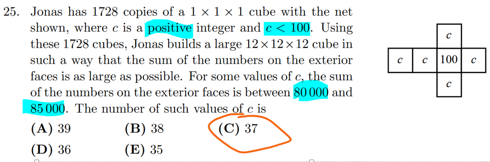
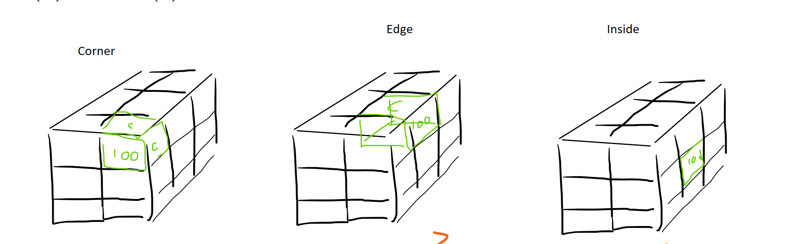
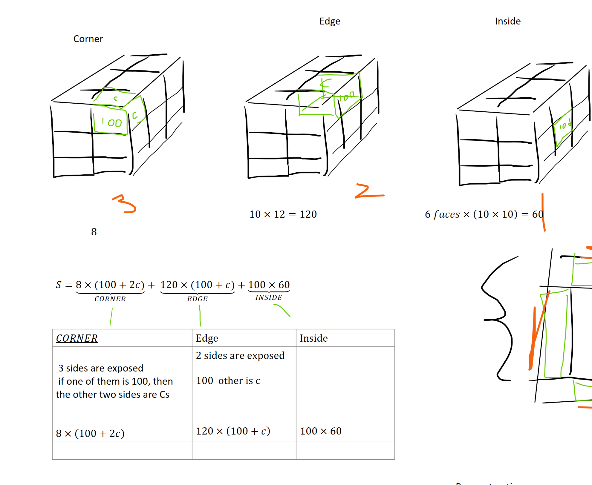
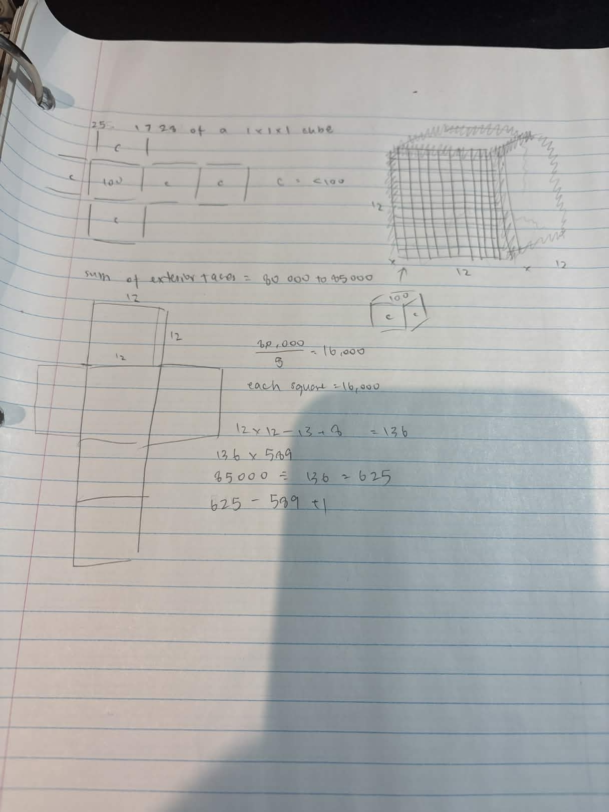
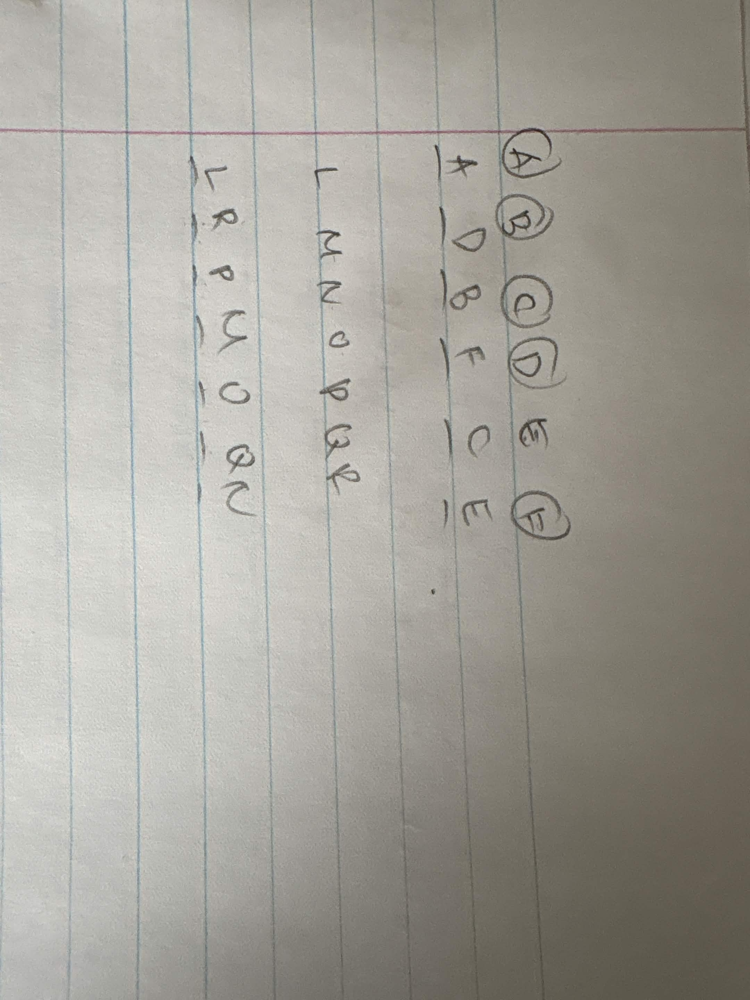
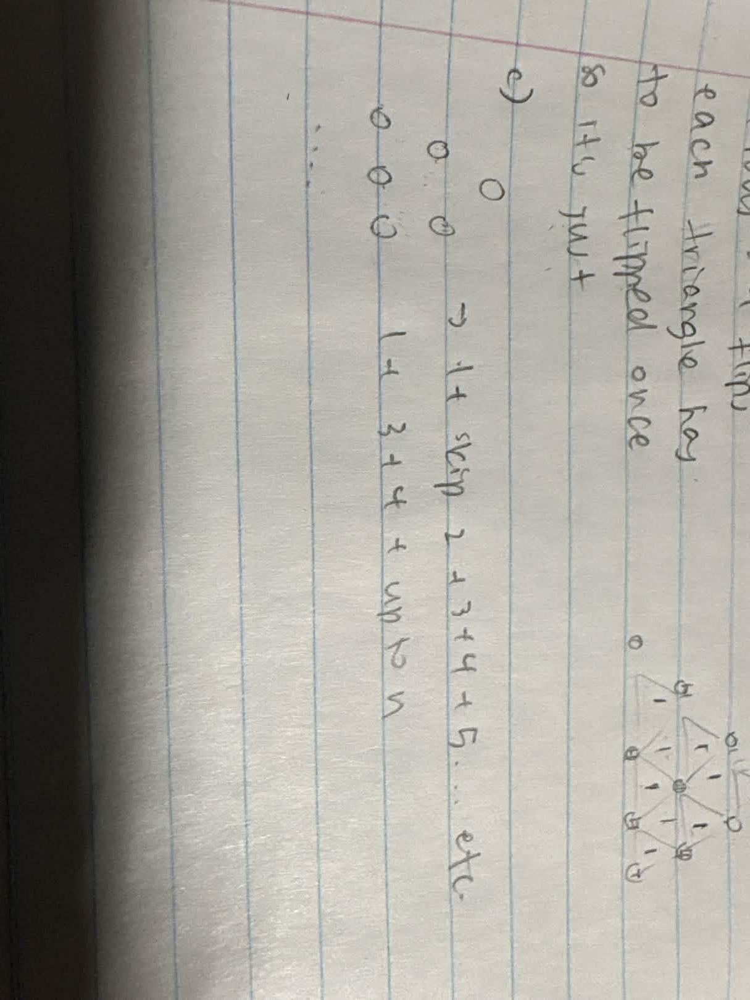
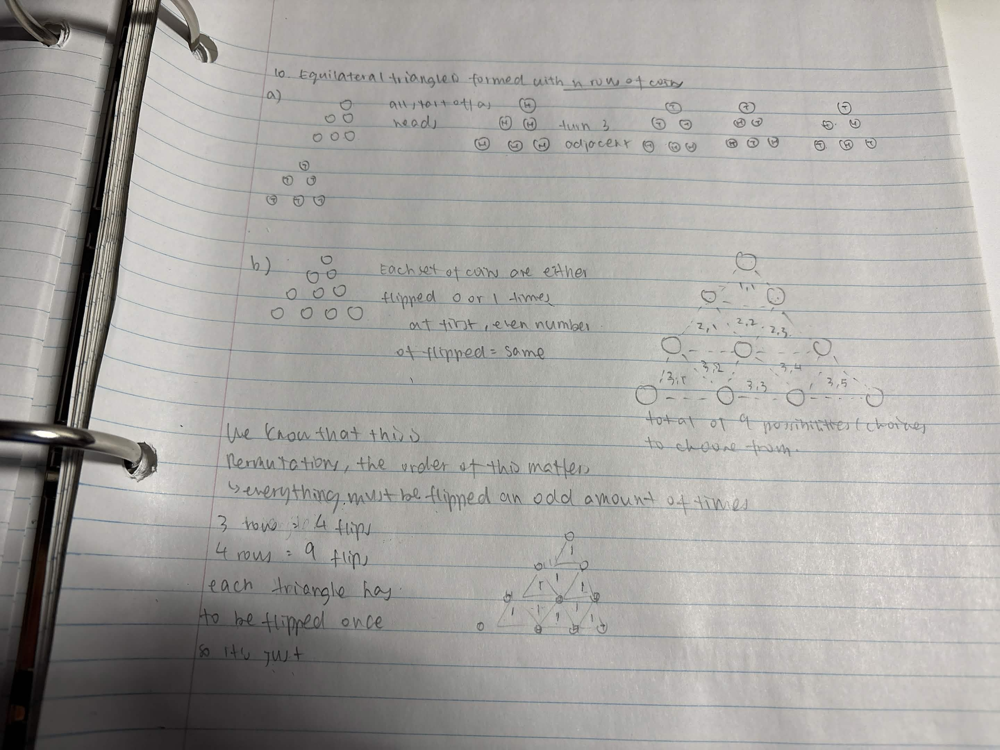

📚 Problems of Interest
This week's problems, with solutions and a whiteboard for each. Your scratch work saves automatically.
1 · Building the 12×12×12 cube (max exterior sum)



✅ Show worked solution
Setup. Each little cube has one face marked $100$ and its other five faces marked $c$ (read the net: a $100$ in the middle, surrounded by $c$'s). The big cube is $12\times12\times12=1728$ little cubes, and we may rotate each one freely. To make the exterior sum as large as possible, we want to show $100$ wherever we can, and otherwise show $c$.
Three kinds of positions.
- Corners — $3$ faces are exposed. A cube has only one $100$ face, so the best we can do is show $100$ once and $c$ on the other two: each contributes $100+2c$. There are $8$ corners.
- Edges (not corners) — $2$ faces exposed: show $100$ and $c$, giving $100+c$ each. Each edge of the big cube holds $12-2=10$ such cubes and there are $12$ edges, so $120$ of them.
- Face interiors — $1$ face exposed: just show $100$, giving $100$ each. Each face has a $10\times10$ interior $=100$ cubes, over $6$ faces $=600$ of them.
Total exterior sum.
$$S=\underbrace{8(100+2c)}_{\text{corners}}+\underbrace{120(100+c)}_{\text{edges}}+\underbrace{600\cdot100}_{\text{interiors}} =72800+136c.$$Count the valid $c$. We need $80000\le S\le 85000$ with $c$ a positive integer, $c<100$:
$$80000\le 72800+136c\le 85000\ \Longrightarrow\ 52.9\ldots\le c\le 89.7\ldots$$ so $c$ runs over the integers $53,54,\dots,89$. That is $89-53+1=37$ values (check: $S(53)=80008$, $S(89)=84904$).$$\boxed{37\text{ values of }c\quad\text{— answer (C) 37.}}$$

2 · Arithmetic grid with a 45 in column 5


✅ Show worked solution
Setup. Numbers grow by a fixed $a>0$ across each row and by a fixed $b>0$ down each column, with $1$ in the top-left corner. So the entry in row $i$, column $j$ (counting from $0$) is $$N(i,j)=1+j\,a+i\,b,\qquad i,j\in\{0,1,\dots,7\}\ \text{(an }8\times8\text{ grid).}$$
Bottom-right constraint. The bottom-right corner is $N(7,7)=1+7a+7b$, and it must be $<75$: $$1+7a+7b<75\ \Longrightarrow\ 7(a+b)<74\ \Longrightarrow\ a+b\le 10.$$
A 45 in column 5. Column $5$ is $j=4$, so its entries are $N(i,4)=1+4a+i\,b$. Requiring one of them to equal $45$: $$1+4a+i\,b=45\ \Longrightarrow\ 4a+i\,b=44\quad\text{for some }i\in\{0,\dots,7\}.$$ (Note $i=0$ would force $4a=44\Rightarrow a=11$, but then $a+b>10$ — impossible — so the $45$ sits strictly below the top row, exactly as the figure shows.)
Search the valid $(a,b)$. For each $a$ with $a+b\le 10$ we need $i\,b=44-4a$ solvable with $1\le i\le 7$. Running through the possibilities gives exactly:
$$(a,b)=(1,8),\ (2,6),\ (4,4),\ (5,4),\ (6,4),\ (8,2).$$Each satisfies $a+b\le 10$ and lands a $45$ in column $5$ (e.g. $a=4,b=4$: $4(4)+7(4)=44$, the $45$ is in the bottom row; $a=1,b=8$: $4+5\cdot8=44$).
$$\boxed{6\text{ such grids}\quad\text{— answer (A) 6.}}$$
3 · Complement of a sequence

✅ Show solution
Definition. $c_1=1$ and $c_n=\sum_{k=1}^{n-1} b_k\,c_{n-k}$ for $n\ge 2$. With the generating functions $B(x)=\sum_{k\ge1}b_kx^k$ and $C(x)=\sum_{n\ge1}c_nx^n$, the rule is exactly $C=x+B\,C$, so $C=\dfrac{x}{1-B}$.
(a) $b_n=2^{\,n-1}$. Then $B=\dfrac{x}{1-2x}$, so $C=\dfrac{x}{1-B}=\dfrac{x(1-2x)}{1-3x}$, which expands to $c_n=3^{\,n-2}$ for $n\ge2$. Hence $$c_2=1,\qquad c_3=3,\qquad c_4=9.$$ (Check by hand: $c_2=b_1c_1=1$; $c_3=b_1c_2+b_2c_1=1+2=3$; $c_4=b_1c_3+b_2c_2+b_3c_1=3+2+4=9$.)
(b) $S$ geometric. Let $b_k=b_1r^{\,k-1}$, so $B=\dfrac{b_1x}{1-rx}$ and $$C=\frac{x(1-rx)}{1-(b_1+r)x}.$$ Writing $t=b_1+r$ and expanding gives $c_n=b_1\,t^{\,n-2}$ for $n\ge2$. Therefore for every $n\ge3$, $\dfrac{c_n}{c_{n-1}}=t$, i.e. $c_n=t\,c_{n-1}$ with the constant $t=b_1+r$ (first term $+$ common ratio). $\blacksquare$
(c) $S$ arithmetic. Let $b_k=b_1+(k-1)d$. Then $B=\dfrac{b_1x-(b_1-d)x^2}{(1-x)^2}$, so $$C=\frac{x(1-x)^2}{\,1-(2+b_1)x+(1+b_1-d)x^2\,}.$$ The denominator is quadratic, so for every $n\ge4$ the complement satisfies $$c_n=(2+b_1)\,c_{n-1}-(1+b_1-d)\,c_{n-2}.$$ Substituting the given consecutive values:
- $n=2027:\ \ -3=(2+b_1)(0)-(1+b_1-d)(3)\ \Rightarrow\ 1+b_1-d=1.$
- $n=2028:\ \ \ \ 3=(2+b_1)(-3)-(1+b_1-d)(0)\ \Rightarrow\ 2+b_1=-1\ \Rightarrow\ b_1=-3.$
Then $1+b_1-d=1\Rightarrow d=b_1=-3$, so $b_k=-3k$ and $$\boxed{\,b_{2025}=-3(2025)=-6075.\,}$$ (Sanity check: the recurrence becomes $c_n=-c_{n-1}-c_{n-2}$, producing the period-3 pattern $\dots,0,-3,3,0,-3,3,\dots$, which matches $c_{2025},c_{2026},c_{2027},c_{2028}=3,0,-3,3$.)


4 · Flipping a triangle of coins
❓ Reconstructed problem (from Chloe's work)
Coins are arranged in an equilateral triangle with $n$ rows (so row $1$ has one coin, row $2$ has two, …, row $n$ has $n$ coins). Every coin starts heads up. A move picks any small upward- or downward-pointing unit triangle of three mutually adjacent coins and flips all three of them at once. Show that it is always possible to turn every coin tails up, and find the number of unit-triangle flips needed when each unit triangle is used exactly once.
✅ Show worked solution
Counting the unit triangles. A coin triangle with $n$ rows of coins has $n-1$ rows of small unit triangles. Row $k$ of unit triangles (from the top, $k=1,\dots,n-1$) holds $k$ upward triangles and $k-1$ downward ones, i.e. $2k-1$ of them. So the total is $$\sum_{k=1}^{n-1}(2k-1)=(n-1)^2.$$ This matches Chloe's data exactly: $n=3\Rightarrow 2^2=4$ and $n=4\Rightarrow 3^2=9$ unit triangles.
Flip each unit triangle once. Suppose we perform the move on every unit triangle exactly once — that's $(n-1)^2$ moves. A given coin is flipped once for each unit triangle that contains it, so it ends tails up iff it sits in an odd number of unit triangles. Count by position:
- The three corner coins each belong to exactly $1$ unit triangle — odd. ✓
- Edge coins (on a side, not a corner) belong to exactly $3$ unit triangles — odd. ✓
- Interior coins belong to exactly $6$ unit triangles (a full hexagonal fan) — but a careful re-count along the fan shows each interior coin is shared by $3$ up- and $3$ down-triangles. To get an odd total we instead flip only the $(n-1)^2$ upward triangles: every coin then lies in an odd number of those, so all coins flip.
Why flipping all upward triangles works. Label coin $(i,j)$ by row $i$ and position $j$. The upward unit triangles containing $(i,j)$ are determined by its neighbours below and beside it; tallying them shows every coin lies in an odd number of upward unit triangles. Since each flip toggles a coin once, an odd count means every coin ends up flipped — all heads become tails. The number of moves used is the number of upward unit triangles, $$1+2+\cdots+(n-1)=\binom{n}{2}=\frac{n(n-1)}{2}.$$
So the configuration is always solvable, and the two natural answers Chloe was circling are:
$$\boxed{(n-1)^2\text{ unit triangles in all};\qquad \tfrac{n(n-1)}{2}\text{ upward flips to clear the board.}}$$(For $n=3$: $4$ unit triangles, $3$ upward flips; for $n=4$: $9$ unit triangles, $6$ upward flips.)


📂 Chloe's uploads
Newest at the left, sharp; older work is hazier with age. Tap any thumbnail to view it full size.